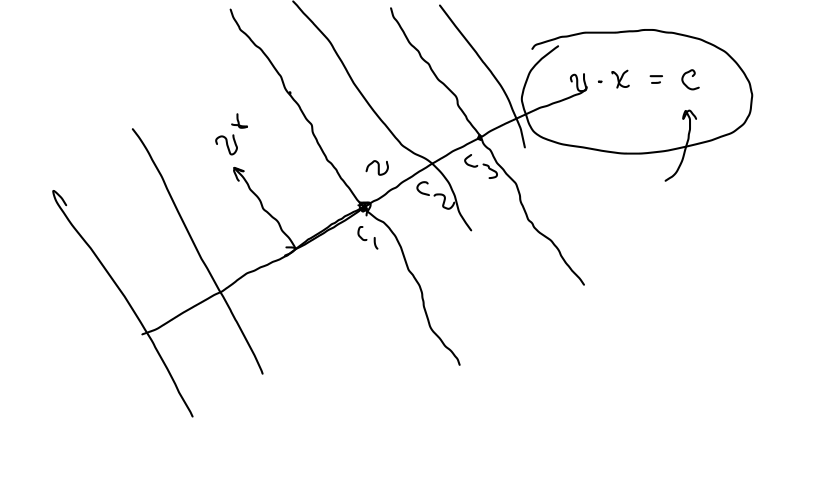
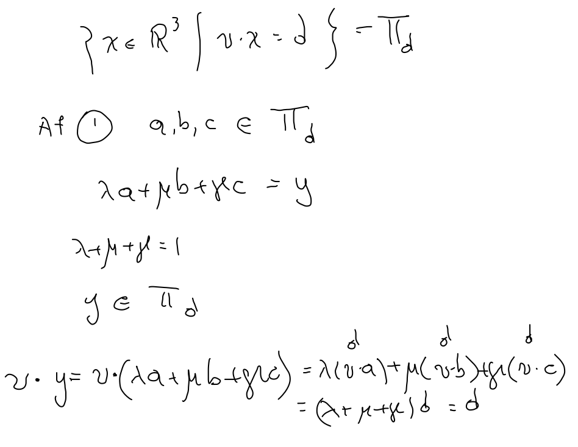
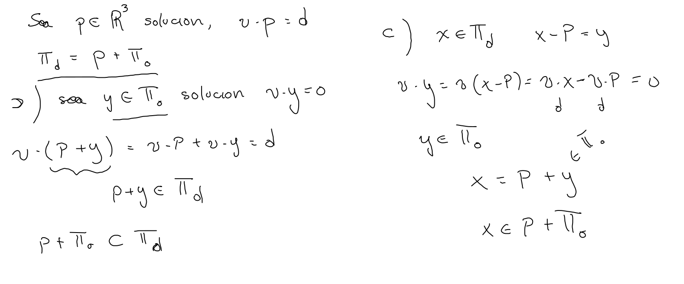
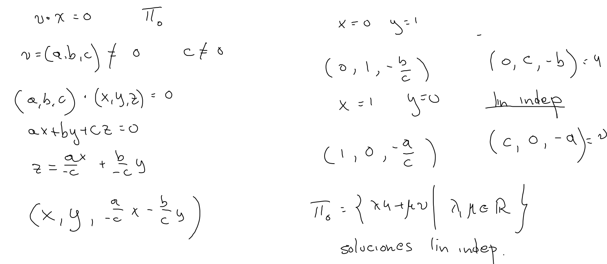

Consideremos ahora la intersección de dos líneas rectas, en su forma normal L1:L2:{x∈R2∣u⋅x=e}{x∈R2∣v⋅x=f},
esto es, buscamos los puntos x∈R2 que satisfacen simultáneamente las dos ecuaciones, es decir, las soluciones de un sistema de la forma: ax+bycx+dy==ef
del cual sabemos que tiene solución única, siempre y cuando, el determinante det(u,v)=u⊥⋅v=ad−bc=0; recordando que el determinante también detecta paralelismo entre los vectores en cuestión, tenemos:
Proposición
det(u,v)=0det(u,v)=0⟺⟺L1∩L2es un solo puntoL1∥L2⟺{L1∩L2=∅L1=L2□
Observaciones:
En el segundo caso tenemos que las rectas coinciden cuando los vectores en R3 que determinan las constantes son paralelos.
Variando la constante en cada ecuación determinamos el haz de rectas perpendiculares al comadre ortogonal del vector en cuestión, 
Para resolver el sistema consideramos “combinaciones lineales” de las dos ecuaciones, lo cual define una nueva recta que pasa por el punto de intersección: Lα,β:(αu+βv)⋅x=αe+βf,
cuando u y v, no son paralelos o linealmente independientes, variando los coeficientes obtenemos todo el haz de rectas que pasa por P=L1∩L2 y “resolver” el sistema significa encontrar los coeficientes para los cuales se tienen la rectas horizontal y vertical.
Quinto
Quinto postulado: Dada una recta L y un punto P fuera de ella, en el plano, existe una única recta L′ que pasa por P y no intersecta a L.
Demostración.- Sea L:u⋅x=c, tomamos L′:u⋅x=u⋅P, claramente paralela y pasa por P. Como P∈L, se tiene que u⋅P=c, así, L∩L′=∅, y cualquier otra recta por P no es paralela y por lo tanto intersecta a L□
Planos normales en R3
Consideramos ahora un vector no nulo v∈R3 y una constante d∈R, el conjunto de soluciones de la ecuación normal no-homogénea Πd={x∈R3∣v⋅x=d}, afirmamos se trata de un plano, esto es, coincide con el trasladado de un plano por el origen o el conjunto de las combinaciones baricéntricas de tres puntos no colineales en el espacio.
Afirmación.- Dados tres puntos que satisfacen la ecuación, cualquier combinación afín de ellos también la satisface. 
Afirmación.- Dada una solución P de la ecuación Πd=Π0+P. 
Afirmación.- Π0 (las soluciones de la ecuación homogénea) es un plano por el origen. En particular si v=(a,b,c) y c=0 entonces Π0=⟨{(−b,a,0),(−c,0,a)}⟩
